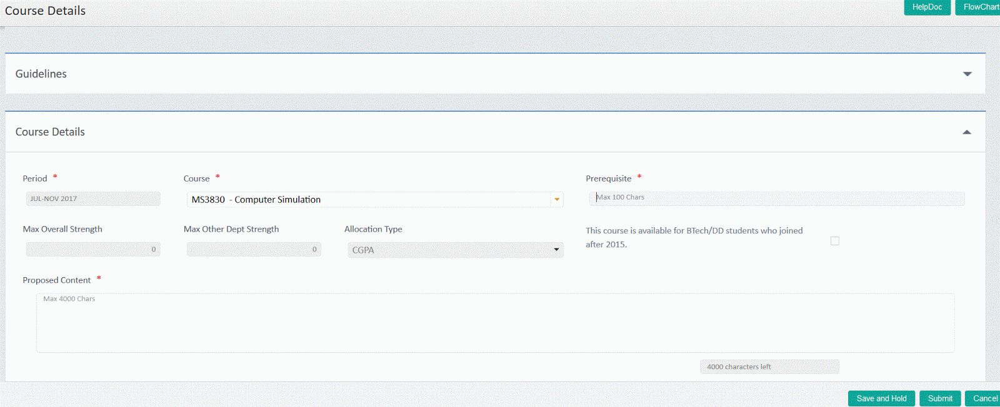

How are course details made available to SEAT?
SEAT gets course details from workflow. Departments send these details (course capacities, ranking criteria, etc) to workflow through the slotbook every semester.What course details are relevant to SEAT?
For the purposes of SEAT, a course has two types of information:What are the course details that need to be provided for SEAT for each offering?
During slotbook update, departments provide the following details for each course.What is the difference between Total Capacity (TOT CAP) and Outside Capacity (OUT CAP)?
The Total Capacity denotes the maximum number of students that SEAT will allot to the course. Note that only 2015 batch and later BTech / DD students fall under the purview of SEAT -- we call such students as under the purview of SEAT students. A course may also be credited by BTech/ DD students from 2014 and earlier batches and postgraduate students (MTech, MS, PhD). We call such students as outside the purview of SEAT students. Note that outside the purview of SEAT students are not accounted for in Total Capacity. Therefore, the Total Capacity should NOT be confused with Class Size (which is used for room allocation etc).How do I split my Class Size between students under purview of SEAT and outside purview of SEAT?
For this, we do not have a clear answer. We request departments to take a call based on historical data. Going forward, as a larger set of students fall under the purview of SEAT, we expect that the estimation will become easier.How do faculty members communicate extra details for this offering of the course?
Once the slotbook is approved by the TTC Chair, individual faculty members can provide data pertaining to courses that they will be offering in the upcoming semester. They can fill these details by logging into workflow and navigating to Academics → Course Details; a sample screenshot is provided below. In this screen, individual course instructors can provide the following inputs.  The instructor can provide a brief description of the course (Proposed content) and the background knowledge expected (Prerequisite). Note that this information on background knowledge is only for students to read manually. At this stage SEAT cannot use this information to validate whether students have the necessary prerequisites.What about COT for courses?
With this new system in place, COT will change its form -- instead of students going around with paper forms, the COT is specified by the teacher indirectly. At the time of filling the slot-book, course instructors will provide course capacity and ranking criteria. Thus, instructors can control the number of students allocated to the course as well as the ranking criteria. Departments are requested to update the course master with appropriate prerequisites and course equivalences for all their courses through appropriate channels (via BAC, Senate etc). SEAT has essentially automated the manual task of instructors inspecting the student’s eligibility for the course and the task of selecting students from the pool of interested students.What are different ranking criteria?
Please see Question in Student FAQ (Reference to Page-5) for a detailed description of various ranking criteria. We expect the departments to provide us with ranking criteria for courses offered in each semester. The default is set to Stratified Random.How is ranking criteria different from pre-requisites?
Please see Question in Student FAQWhat are timelines for SEAT in the upcoming semester (July-Nov 2017)?
See the annexure.What are inputs to SEAT?
SEAT uses workflow to get its input from students. Every student who wishes to credit electives in a particular semester, should submit the following:How do I know what courses I am eligible to take?
Workflow shows you all the courses that are being offered across different departments that are available as electives. It is highly recommended that you ensure that you have the background knowledge (prerequisites) to credit the course. You can do this by checking the course details on the academic website, visiting the course home page and/or talking to the faculty offering the course.How do I form my preference list when I have several types of electives to credits like Humanities, Mathematics and others?
Once you have ensured that you meet the prerequisites for a set of courses, create a single list containing all the courses that you wish to give a preference for. Your preference list can contain multiple courses in the same slot. The SEAT software will ensure that you do not have any slot conflicts. Next, you have to colour code the courses in your preference list.What is a colour for a course in the student’s preference list?
Students may have a subset of courses in their preference list from which they wish to pick only one. In that case, the student should give all the courses in this subset a single colour. There is no restriction on the number of courses that can be grouped under one colour, but it should be noted that every course can get at most 1 colour.What about COT (Consent of Teacher) for courses?
There is no more paper COT for students starting from 2015-16 batch. COT has been replaced with course prerequisites and course capacities declared for SEAT.What are the different ranking criteria for courses to rank students?
Every course has a ranking criteria associated with it. Types of ranking criteria currently available in SEAT are:| S1 | S2 | S3 | S4 | S5 | |
|---|---|---|---|---|---|
| Position of C in student preference order | 1 | 1 | 1 | 2 | 2 |
| CGPA of student | 7 | 9.2 | 8.5 | 8.5 | 6 |
How is ranking criteria different from pre-requisites?
Pre-requisites are used to decide if a student is eligible for a given course. Ranking criteria on the other hand, like ‘CGPA’ or ‘Random’ as discussed above, are used to rank the eligible students for allotment in the presence of limitations such as course capacities.What are some of the things students should keep in mind when filling preferences?
A student will provide his maximum credit limit (including core course credits). This maximum credit limit cannot exceed 60. The student will not be allotted more credits than the maximum credit limit, but it is possible that his credit limit will not be met if the student does not provide a long enough preference list or makes a mistake (like colouring all his courses with the same colour). In this case, the student is advised to apply for courses in the 2nd round. Hence a student should make his preference list sufficiently long.What happens to students who do not get allocated enough electives or are dissatisfied with some of their allotted courses?
The best way to avoid dissatisfaction is to do a thorough homework of the available courses and provide a well thought out and sufficiently long ordering of courses.What are timelines for SEAT in the upcoming semester (July-Nov 2017)?
See the annexure.